第18章：美式二元期权（Binary Options: American Style）
期权交易大师 Adam K. 打电话来："听说你要开一个四天的奇异期权对冲研讨会。能不能明天午饭时间给我讲一遍？我只要干货（the beef），没耐心听细节。"
导读：本章要解决的问题
第 17 章把欧式二元的 pin 概念讲透了。本章加上一个维度：触发（touch），于是有了美式二元。一个美式二元在价格被"触及"时支付，而不是在到期时落在某侧。这一个改动带来全章的核心难点：期权的有效到期不再是固定的 ，而是一个未知且极不稳定的停时（stopping time）。Taleb 一句话点题：美式二元本质是一个对时间的押注（a bet on time），而非对资产的押注。
把全章压缩成几条主线：
- 美式二元路径依赖、价格更贵。因为它至少有同等机会被提前敲掉，"买方"（触及时收钱的人）的支出更大（一般是欧式的两倍），相应地卖方"未被满足"的风险也大得多。
- 污染原理（contamination principle）决定它的 gamma/vega 符号。如果障碍点能制造正盈亏，那么它周围区域就做多 gamma、做多 vega，且随距离平滑衰减。无漂移时，美式二元的 vega/gamma 符号永不改变，是一个局部化的长 vega 口袋。
- vega 是凹的（concave）：波动率上升抬高价格，但以递减速率，因为波动率上升缩短首次触及时间。对持有者，vega 凹意味着对 vvol（四阶矩）做空一旦做 vega 中性。做空四阶矩是交易员最糟的处境，因为不像三阶矩（skew）有明确补偿。
- 四类内生风险：久期风险（停时漂移）、gap 风险（解平 delta 的滑点）、障碍后 vega 消失、vega 凹性。这四类风险以某种形态存在于所有障碍期权里。
- 对冲只能用同为"时间期权"的工具，即另一个触发点相近的障碍。用欧式香草对冲是纯亏的买卖，用欧式二元对冲是对冲的幻觉。被希腊字母导航的交易员会遭遇严重危险，看 strike 的"非希腊"交易员活得更好。
- 进阶变体：at-settlement（if settled）二元在障碍附近制造负 gamma 洞；美式 double bet 不是两个 bet 之和（不可 SDF 分解）；应用延伸到分期摊还利率证券和信用风险。
笔记沿原文 美式单二元 → 污染原理 → National Vega Bank 案例 → 时间的摧残 → vega 凸性 → 交易方法 → at-settlement → 美式 double bet → 其他应用的顺序展开，在每处把交易语言接回数学结构：美式二元价 ↔ 首次触及概率、污染原理 ↔ 热传导/Feynman-Kac、停时 ↔ 自由边界、vega 凹 ↔ 价格对 的二阶导为负、gap delta ↔ 支付奇点的不可对冲性、double bet 不可加 ↔ 首次触及任一障碍的联合分布。
一、美式单二元期权：贵在哪、为什么总是长 vega
美式二元（或数字）期权是一种常见的 bet 期权，区别在于它在价格被"触及"时支付，而非在价格结算于某价之上或之下时支付。
按此定义，美式二元是路径依赖的（图 18.1）。交易员不能跑去远足度假、到期日再回来履行 bet 义务，bet 可以在到期前的任何时刻达到终止。
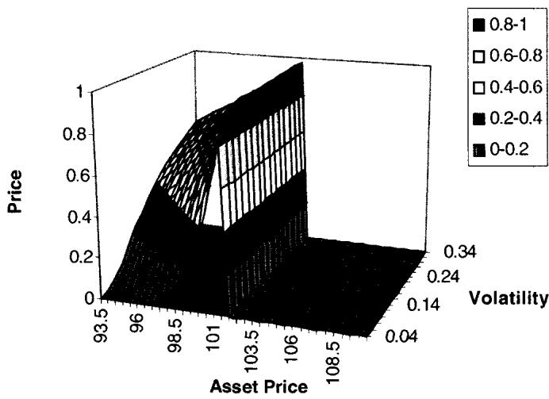
美式和欧式 bet 的第一个显著区别是价格。因为这个期权至少有同等机会被敲掉，所以对"买方"而言它在任何时刻都是比欧式更大的支出（一般是两倍）。买方定义为价格被触及时收到支付的人。美式 bet 因此更贵，后果是卖方"得不到满足"的风险大得多。
Taleb 给了一个数值锚：现货在 100、波动率 15.7%。一个"现货 100 天后高于 105"的欧式 bet 值面值的 26%；而一个美式 bet 值面值的 51%。几乎正好两倍，原因是欧式只看终点是否在 105 上方，美式只要中途任一刻触及 105 就赢，而由反射原理（reflection principle），布朗运动"中途触及某水平"的概率约为"终点在该水平之上"概率的两倍。
把美式二元价接回理论，它是首次触及时间 满足 的（风险中性）概率。欧式二元是 ，美式二元是 。无漂移下后者恰是前者的两倍，这就是 26% 对 51% 的来源，也是反射原理在交易上的直接落地。
1.1 Option Wizard：污染原理与障碍期权
如果存在一个点（即障碍），它能制造一些正盈亏（bet 的终止对买方是正的），那么这个点周围的区域会做多 gamma，且数量随距离平滑递减，于是这个头寸从该点起做多 vega。反过来，如果出于 carry 的原因（见 Girsanov），bet 的终止导致负盈亏，那么该点附近的区域会带负 gamma。
这就是污染原理：障碍点的盈亏符号会"污染"它周围的整片区域，决定那里的 gamma 和 vega 符号。把它接回理论，这是 Feynman-Kac 表示的直接后果。期权价值满足热传导型 PDE，障碍点是一个边界条件（源项），它的值会沿空间向周围扩散，邻域的曲率（gamma）继承障碍点盈亏的符号。这与第 15 章讲过的"污染原理 ↔ 热传导方程"是同一回事：一个点上的条件像热源一样扩散到邻域，决定那里解的凸凹。
举例：现货 100、波动率 15.7%。"现货 100 天后高于 105"的欧式 bet 值面值 26%，美式 bet 值 51%。
另一个区别是：因为不像欧式那样可以越过篱笆（即移动"进入"价内），美式 bet 对卖方永远是长 volatility。直觉上容易感到，与别的结构不同，只要移动让期权更接近平值（更接近障碍），移动就有利于卖方。如果一个方向的移动能转化成更高利润，那么由污染原理，另一个方向的移动也应当有帮助。
第 17 章确立了欧式二元是一个 risk reversal。美式二元的 gamma 一般是单调的，尽管并非总是（图 18.2）。
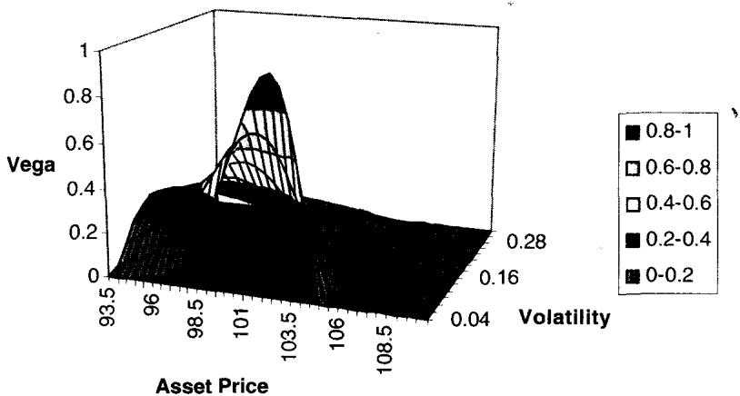
在没有漂移时（远期与现金平价），美式二元的 vega 和 gamma 符号永不改变：它始终是一个局部化的长 vega 口袋（a pocket of localized long vega）。
利率问题留到第 19、20 章。一个正的曲线会让美式二元在 bet 价格附近带负 gamma、在远处带正 gamma。规则如下：
当针对期权的 delta 对冲产生负 carry 时，美式二元对"拥有者"（障碍被触及时赚取支付的人）处处为正 gamma。
如果拥有者的 delta 对冲赚取的正 carry 超过同一资产上同一二元（无漂移）的时间衰减，美式二元的 profile 会看起来像一个 risk reversal（即一个不为 0 的三阶位置矩）。
资产里负 carry 的定义，交易员可以用这条简单规则： 期的远期价格高于 期的远期价格（即现货）。
这组规则的理论身份是 Girsanov 漂移对停时分布的影响。无漂移时美式二元纯粹是停时 的函数，gamma 处处同号（污染原理给出长 vega 口袋）。一旦有 carry（漂移非零），漂移把价格往障碍推或拉，相当于改变了首次触及的倾向，于是在障碍附近 gamma 可能翻号，profile 退化成 risk reversal。这把欧式二元（天生 risk reversal）和美式二元（无漂移时单调 gamma）的差别讲清了：是 carry/漂移把美式二元从"单调长 vega"扭成"risk reversal"。
美式二元一个引出停时概念的特殊方面是：重要的是"期望存活时间到终止"的分布。在某种意义上，美式二元是一个对时间的押注。期望退出时间（expected exit time）在概率论里早已存在，Module G 给技术细节和参考，第 19 章还会进一步讨论。
二、对冲美式二元：被希腊字母愚弄
这一节是任何"带凹 vega 的非香草结构"的 vega 风险管理的简化教程。
2.1 案例研究：National Vega Bank
案例描述对冲下面这个期权的尝试：一个 105 "若触及"的 bet，终止时每单位支付 1 美元。National Vega Bank 的交易员因为一个被剥离并对冲的丑陋结构，变成做多 105 美式 bet、面值 1000 万美元。现货在 100，远期与现金平价。波动率 15.7%（对应 252 个交易日、每天 1% 移动）。bet 恰好 100 天后到期。"公允"值（更该叫"不公允"值）是 54.7%，即 547 万美元。
通过"买入"，交易员有一个类似做多 call 价差的头寸（做多 delta）。另外，因为他押注现货移动，他会做多 volatility。首先想到的是 delta。交易员会卖出相当于证券面值 8% 的量来对冲它，即 80 万美元。
| Price | Bet Price | Option P/L | Hedge P/L | Total P/L |
|---|---|---|---|---|
| 94.8 | 0.21119 | -3353 | 4160 | 807 |
| 96.0 | 0.27201 | -2745 | 3200 | 455 |
| 98.0 | 0.39598 | -1505 | 1600 | 95 |
| 99.6 | 0.51447 | -320 | 320 | 0 |
| 100.0 | 0.5465 | 0 | 0 | 0 |
| 100.4 | 0.57941 | 329 | -320 | 9 |
| 102.0 | 0.7186 | 1721 | -1600 | 121 |
| 104.0 | 0.90462 | 3581 | -3200 | 381 |
| 104.8 | 0.98089 | 4344 | -3840 | 504 |
| 105.2 | 0 | Closed | Closed | 504 |
（表 18.1 三条腿的盈亏，摘取自原表。Total P/L 一列在 100 两侧均为正，正是长 gamma 的特征；到 105.2 障碍触及，头寸关闭。）
表 18.1 和图 18.3 显示交易的三条腿：二元的盈亏、delta 的盈亏、最终净额。如图 18.3 所示，头寸是温和地做多 gamma。但 gamma 在障碍之外消失了。另外，交易员需要快速解平他的头寸。如图 18.3 和 Option Wizard（Gap Delta）所讨论，存在一个不连续支付。如果交易员没能及时抓住市场，对冲会偏掉一个滑点因子。
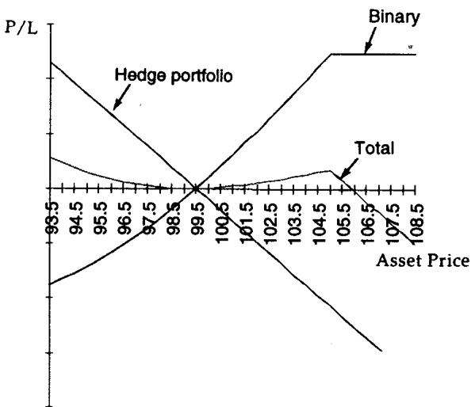
图 18.4 显示时间在两个资产价格水平上的效应。随时间流逝，gamma 会在障碍附近增加、在别处减少。在 103（离障碍 2 点）的衰减斜率，比在 100（离障碍 5 点）的斜率陡得多。由于衰减和 gamma 成对出现，读者可以推断，随时间推移障碍附近的 gamma 会增加。
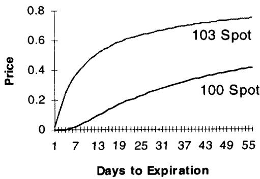
这个案例的关键观察是"长 gamma 但在障碍处戛然而止"。Total P/L 在 100 两侧都为正（长 gamma），但越过 105 障碍后头寸关闭、gamma 消失。把它接回理论，这正是 1.1 节污染原理的数值版：障碍点（正盈亏）向邻域扩散出正 gamma，邻域越近、扩散越强，所以随时间推移、概率质量向障碍集中，障碍附近 gamma 越来越尖。这与第 17 章欧式二元临近到期 delta 收敛到 Dirac delta 同源，只是这里 gamma 集中在障碍而非行权价。
2.2 时间的摧残
图 18.5 描绘剩余天数更少时的初始头寸，显示时间的效应。不用说，头寸随到期临近而 gamma 增加。随时间流逝，下面这个问题出现：障碍附近的赌注变大。
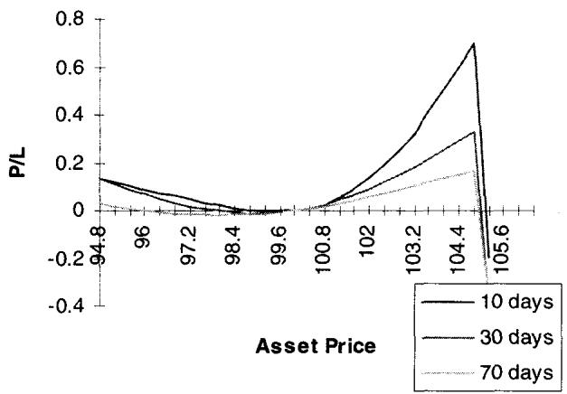
图 18.5 的图上不能在两个不同日期之间读盈亏。它对应运行那天在 100 处重新对中（recentering）头寸，所有盈亏线都被做成在 100 处为零，这阻止用户比较两个日期，但允许在一个日期内可视化盈亏。这种不可比性在 Option Wizard（Looking at a Graph through Time）里解释。
注意：这里假设交易员在障碍被触及后没有在市场上解平他的 delta。这显示了盈亏的陡降，因为二元被终止后不再累积正盈亏，而 delta 继续构建负盈亏。从图 18.5 明显看出，delta 在临近到期时在 strike 附近变大，所以交易员需要在上涨中卖出资产。
2.3 Option Wizard：Gap Delta（I）
gap delta 是某个障碍附近 delta 的差。交易员需要在某个给定价格、把为对冲障碍结构所用的一定量 delta 倾倒进市场来解平。由于流动性问题，交易员无法保证拿到精确的目标价。试图在障碍之前执行同样危险，因为它抬高"假触发"（fake trigger）的危险，即市场接近障碍后又拉回、没真正触及。
解平执行价与障碍之间的差叫滑点（slippage，第 4 章定义）。许多交易员在市场接近障碍时遭遇负面意外。流动性差的市场会很凶险，因为它们在某个障碍附近经历流动性洞（liquidity holes，第 4 章定义）。gap delta 在书中其他地方有充分论述，它值得尽可能多的关注。
gap delta 的理论身份是支付奇点处 delta 的跳变。美式二元在障碍处 delta 不连续（触及前持有一大堆对冲 delta、触及瞬间要全部解平），这个 delta 的跳变量必须在一个价格点上倾倒进市场，而市场在障碍附近往往有流动性洞，于是产生滑点。这把第 4 章的流动性洞、第 13 章的支付奇点、本章的停时三者扣在一起：不连续支付 + 停时触发 + 障碍附近流动性枯竭，共同制造了无法干净对冲的 gap 风险。
2.4 Option Wizard：透过时间看一张图
不像许多可以轻易随时间外推的函数，一个期权头寸必须在分析时记住：市场并非在两期之间冻结，交易员也不是标本鸟（stuffed birds）。头寸会变，交易员会相应反应。一张表示一个月后同一头寸的图不会正确预测盈亏，因为它不包含期权头寸持续经历的恰当调整。
但下面的事会发生：这些 delta 带来同样多的潜在问题，因为二元被敲掉需要解平越来越大的金额。交易员需要买回他卖出的。delta 越高，他需要卖得越多，要买回的也越多。从谁那买回？最可能是从他最初卖给的那些人。另外看潜在危险：如果二元没被敲掉呢？二元上时间价值累积的盈亏会迅速放气，造成可观的时间衰减。
再看不重新对中的同一张图（图 18.6）。容易推断头寸随时间 gamma 增加、因而时间衰减增加。临近末尾，时间衰减变成严重问题。盈亏应从 100 的原点读到下一个点。它假设在该日期、在 100 价格上做 delta 对冲，之后直到障碍触及不再对冲。所以 10 天头寸是在第 10 天的 delta 上做成 delta 中性的，那个 delta 远低于第 70 天的。否则 bet 的价格会呈现不同特征。
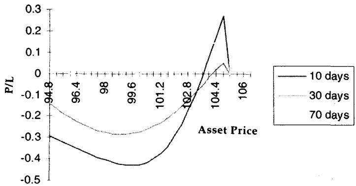
图 18.5 和 18.6 有一个微妙区别。前一张图里，30 天线落在 10 天线和 70 天线的下方，原因是 100 处的 delta 中性。
图 18.7 给出真实风险的直觉。到期时间越长，资产价格到期权价值的斜率越水平，风险越低。时钟上时间不多时，交易在远离 strike 处安全、在 strike 附近危险。图 18.8 显示对应的 gamma。
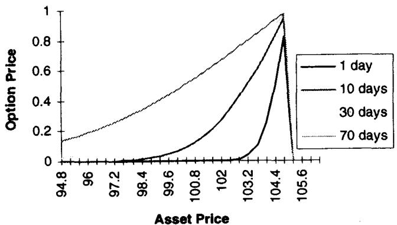
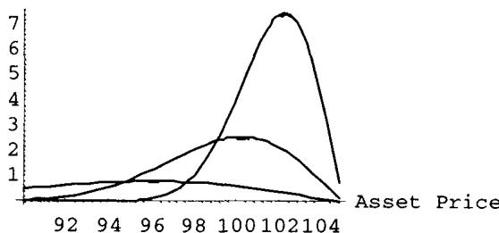
这两节的母题是"风险随时间向障碍集中"。把它接回理论：随 ，停时 的可能空间收缩，概率质量挤向障碍邻域，所以 gamma 在障碍附近发散、别处趋零（图 18.8）。"看图要记住交易员会反应"则是第 16 章"动态对冲让一切路径依赖"的延续，静态外推一张未来盈亏图会错，因为它没算进交易员沿途的 rebalance 和障碍触及时被迫的反向解平（要从当初的对手买回），这正是流动性反身性的来源。
三、理解 vega 凸性
图 18.9 里第一个值得注意的效应是：差在极端处变得更薄。每个期权交易员都知道期权的 vega 在远离 strike 处减小，但这里似乎相当夸张。另外，vega 在障碍处完全消失。
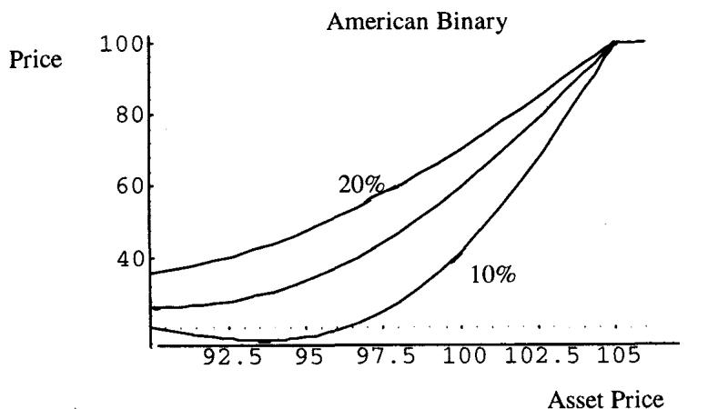
这个效应不平凡。它提出一个问题：如何用"在障碍处不消失"的工具去对冲美式二元的 vega？许多所谓静态期权复制的尝试都没能成功找到一个能处处模仿支付、并消除 pin 风险的结构。vega 凸性的概念，最好通过构造一个"经由二元做多 vega、经由市场上呈现线性隐含波动率敏感度的其他工具做空 vega"的组合来演示。先看波动率变化对一个结构的效应（图 18.10）。
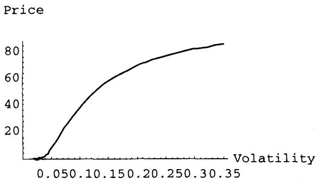
读者可以看到这个函数是凹的（concave）。更高的波动率导致价格上升，但以递减速率。这意味着：如果交易员对这个结构做 vega 中性，他最终会做空 volatility of volatility，换种语言说，做空四阶矩（the fourth moment）。
从交易员的经验看，做空四阶矩是最糟的时刻，因为不像三阶矩（skew）那样通常有清晰的补偿，常数波动率模型给出的市场价格不会计入这种敞口。
从 15.7 波动率起，交易员决定用一个同样官方久期的工具对冲 vega，所以他卖出足够的 volatility 以做到"vega 中性"（即对波动率的小幅移动而言）。
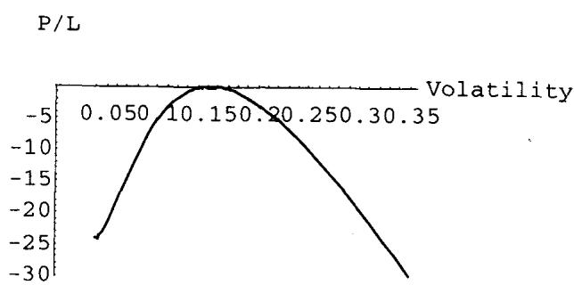
图 18.11 显示波动率凹性。这种凹性主要源于波动率上升时首次退出时间（first exit time）的缩短。vega 敏感度在交易员接近触发时收缩。这种凹性会随市场相对障碍的位置而变化。图 18.12 显示障碍附近的凹性，比图 18.11 的更明显。
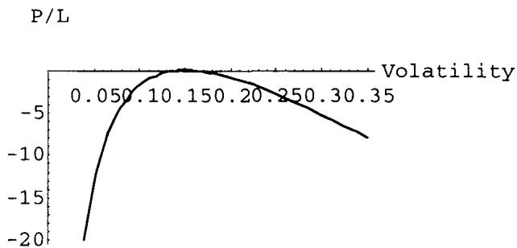
vega 凹性是本章最深的一处理论映射，值得把它讲透。美式二元价是 ，它对 是凹的：。直觉是，波动率上升缩短期望首次触及时间 ，所以价格上升；但当波动率已经很高、触及几乎必然时，再升波动率带来的边际价格增量趋于零（价格被面值 100% 封顶），于是速率递减、函数凹。对持有者，长 vega 但 volga（vega 的凸性，即 ）为负，所以一旦用线性 vega 工具做 vega 中性，就净空 volga = 净空四阶矩 = 净空 vvol。第 15 章讲过 vvol 抬高肥尾、价外期权 volga 为正；这里美式二元 volga 为负，所以做空它等于赌"波动率不会再剧烈波动"，而这恰恰是没有补偿、且在波动率爆炸时致命的头寸（本章末的 war story 就是这么亏的）。
3.1 四类内生风险
到此为止，展示了下面这些风险：
- 久期风险（Duration Risks）。 障碍是一个对久期的押注。在移动的波动率曲线里，香草不能对冲结构的移位、拉长、缩短。静态期权复制到此为止。
- gap 风险（Gap Risks）。 在 bet 水平附近被迫"付高价"去解平 delta 的风险。
- 障碍后的 vega 风险（Vega Risk）。 vega 对冲必须考虑到敞口在越过 bet 价格后消失。这意味着交易员所做的任何对冲，越过那个水平后都应相应收缩。祝你好运找到这样一个对冲。
- vega 凹性（Vega Concavity）。 用作对冲的任何结构都需要有正的四阶矩（即做多 vvol）才能抵消该结构的风险。
这些美式二元内生的风险，以某种形态存在于所有障碍期权里。这四条是全章对障碍期权风险的总纲，把它们对齐理论：久期风险 ↔ 停时 随 曲线漂移；gap 风险 ↔ 支付奇点处 delta 跳变 + 流动性洞；障碍后 vega 消失 ↔ 敞口在 触发后归零，香草 vega 却不归零，标度永远失配；vega 凹性 ↔ volga < 0，对冲工具必须自带正 volga。这四条会在第 19、20 章的障碍期权里反复出现。
四、交易方法：用时间期权对冲时间期权
美式二元期权真正是"时间期权"而非"资产期权"。因此，它们只能用同样是时间期权的工具来对冲，这些工具必然是其他障碍，带相似支付、触发点离 bet 本身不太远。
用欧式香草期权对冲美式 bet 的多头是真正的赔钱买卖，除非把四阶矩风险定价进结构。用欧式二元对冲它们则制造一种对冲的幻觉：欧式 bet 完全是另一种工具，除了在到期那一分钟。
交易员活动中最大的危险来自在电脑表格上读风险。来自欧式香草（久期清晰、定义良好）的 vega，比来自美式二元（久期未知、矩不稳定）的 vega 更可靠。所以靠希腊字母导航的交易员会遭遇严重危险。
"非希腊"交易员（即非参数交易员），那些尽量吸收关于自己 strike 的信息的人，活得更好。这就是为什么最推荐把障碍 book 与香草头寸分开，以便更好地看 strike、在没有"低阶希腊字母的肤浅信息"的情况下导航。
这一节是 Taleb 的方法论宣言，理论上它的根据是希腊字母作为局部线性化在停时附近失效。希腊字母是价值函数的偏导，它们假设参数光滑、久期已知。但美式二元的久期是随机停时、矩不稳定，所以它的 vega 是一个随市场剧烈漂移的数，电脑表格上那个瞬时 vega 给人虚假的安全感。看 strike（非参数）等于直接看支付结构、看自己离哪个障碍多近，绕过了那些不可靠的偏导。这呼应第 14 章"地形图让交易员交易头寸而非交易希腊字母"，并把它推到障碍 book：障碍 book 必须与香草 book 分离，否则香草那些可靠的希腊字母会掩盖障碍那些不可靠的。
五、案例研究：at-settlement（if settled）美式二元
有些二元期权，仿佛美式特征还不够有害，还带一个条件特征的额外困难。除了"若触及"（if touched）型，还有"若结算"（if settled）型，它让常规美式二元相比之下显得好交易。
一个 if settled 二元只在标的资产官方结算穿过触发时才支付 bet 值。这意味着，若 bet 是 call，资产价格需要结算高于触发；若是 put，需要结算低于触发。许多交易员以为这个特征只在最后一天起作用。但对一个美式二元，"最后一天"将是每一个可能的日子。
这个特征以一种奇怪的方式作用于二元价格：它在障碍价格周围制造一个负 gamma 洞（negative gamma hole）。前面看到，美式二元 bet 的重要特征是（除了 delta 上高 carry 的某些情形），它对"拥有者"始终长 gamma 直到终止。这个特征归因于：头寸只能停在障碍的一侧、完全不能不终止地穿过它，那会让 vega 和 gamma 维度变哑（mute）。
一个 if settled 美式二元因此会在日内表现得像欧式二元、在日间表现得像美式（图 18.13）。这给 gap delta 的解平造成严重复杂化。
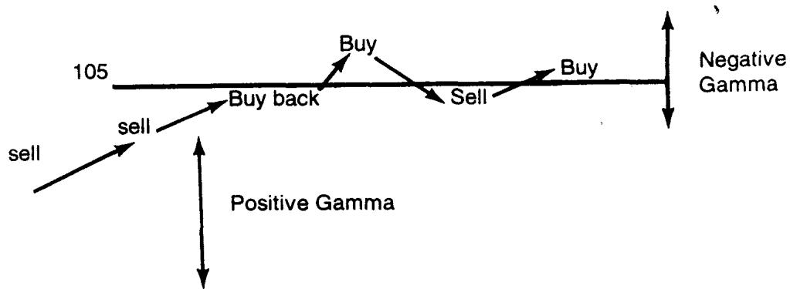
举例：一个 105 Call if settled 美式 bet 终止时支付 1 美元。交易员对头寸卖出 delta。随市场上涨，他需要卖更多以从兑现 bet 的概率中获益。但如果 strike 被穿过，他得把一切买回。如果市场在日内早早穿过 gap，不确定性会持续最久。交易员无从知道他会留在终止区、还是会再次穿越重新进入相反区域。如果市场又跌回、结算在 bet 的"负"侧呢？这构成障碍周围的一个负 gamma 头寸，在极端处（高高在上或低低在下）消失，如图 18.13 和 18.14 所描绘。
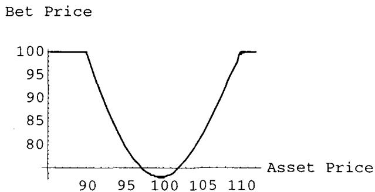
if settled 的理论身份是把"触及即终止"换成了"穿越后还能折返"。纯美式（if touched）一旦触及障碍就吸收终止，所以头寸永远停在一侧、gamma 同号（污染原理给长 gamma）。if settled 允许日内穿越后又折返到负侧，于是障碍不再是吸收边界，而是日内可反复穿越、仅在结算时刻定胜负。这让障碍邻域同时有"日内像欧式（可穿越，risk reversal）+ 日间像美式（触发型）"的混合性质，产生负 gamma 洞。它把单纯停时升级成了"带日历结算约束的停时"，对冲上最致命，因为 gap delta 的解平时机彻底不确定。
5.1 其他希腊字母
研究 rho 这类其他希腊字母通常是徒劳的，因为度量不稳定。既然已经确立 gamma 是不寻常的，就没必要深入次要的、意义更小的希腊字母。这句话本身就是 3 节"被希腊字母愚弄"的延续：当久期是随机停时，连 gamma 都不稳定，更低阶的 rho 更无意义。
六、美式 double binary 期权
一个美式 double bet 是这样的 bet：若市场在期权存续期内触及两个水平中的任一个，条件就满足。这两个水平一般叫高障碍（high barrier）和低障碍（low barrier）。
美式 double bet 的一个特性是：它不是两个 bet 之和。一个欧式 double bet 是 SDF 可分解的（SDF decomposable），意思是可以把两个欧式二元期权相加得到欧式 double bet，因此无需在此考察。一个美式 double bet 是这样一个结构：只要任一条腿被触及就终止，这是个严重的区别。（SDF 即 Smallest Decomposable Fragment，最小可分解片段，在第 2 章的 Option Wizard 里解释。）
要记住美式 double bet 的一个特征：反直觉地，它会以 bet 值的一个非常窄的折价交易（通常用百分比表示；一个报价 96% 的 bet，每投入 96 美元支付 100）。对几周后到期、障碍只跨市场 2 到 3 个日标准差的期权，98% 或 99% 这样的价格很常见。
美式 bet 一个有趣的特征是它的期望退出时间可以多么短。一个以面值 80% 交易的 double bet，粗略地（假设无漂移、无利率）意味着它大约只有名义时间的 20% 的存活时间。
double bet 特征常出现在所谓区间票据（range notes）里，投资者被卖给金融资产和票据，票据根据市场是否留在某区间内来支付票息。这种情况下，假设票息是 bet 的面值。图 18.15 显示 double 二元随时间的 profile。
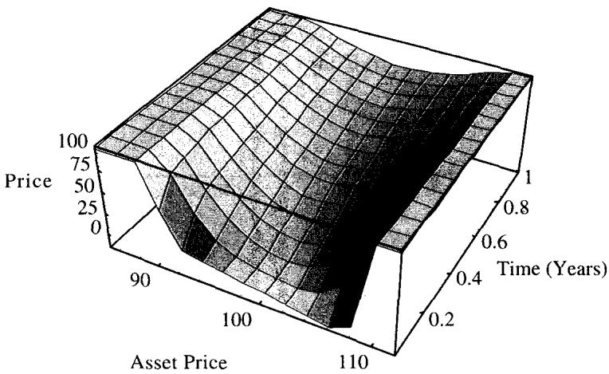
把"double bet 不可加"接回理论，这是首次触及时间联合分布的非线性。欧式 double bet 的支付是 ，两个事件在到期时刻互斥、期望可加，所以 SDF 可分解。美式 double bet 的支付是 ，它在"先触及任一障碍即终止"的意义上耦合：触及高障碍就再没机会触及低障碍。两个首次触及时间 的联合分布不可分离，所以 double bet 两个 single bet 之和。"80% 价 ⟹ 约 20% 名义存活时间"则是停时期望的一个粗略读数：双障碍跨市场窄、几乎必被触及，期望存活时间极短，价格逼近面值。
6.1 double binary 的 vega
障碍对波动率上升的反应是缩短它的期望到达时间。这呈现一种非常凹的做多 vega 方式。正因如此，即便通过卖出其他凹 vega（如单障碍）来对冲也可能不够。一个交易在 80 或 90 的工具，只能随波动率上升到达 100，这限制了它的 vega 力量。凹性，作为经验法则，可以这样判定：当一笔交易可能损失的金额远高于可能赚取的金额时，凹性特征加剧。容易看出，隐含波动率超过 20% 时 bet 价格就接近 100%。
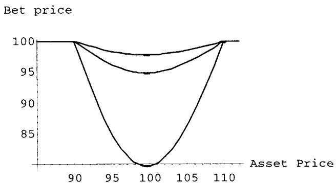
表 18.2 显示一个 double bet 在 16% 波动率的交易（图 18.16 和 18.17），以及用线性 vega 对冲 vega 敞口的尝试。金额以 1% bet 的每单位表示。
| Vol (%) | Price (%) | P/L | Hedge P/L | Total |
|---|---|---|---|---|
| 6 | 24.4 | -70.5 | 23.71 | -46.81 |
| 10 | 65.3 | -29.6 | 14.22 | -15.38 |
| 13 | 85.1 | -9.8 | 7.11 | -2.66 |
| 16 | 94.9 | 0.0 | 0.00 | 0.00 |
| 19 | 98.6 | 3.7 | -7.11 | -3.40 |
| 22 | 99.7 | 4.8 | -14.22 | -9.41 |
| 26 | 100.0 | 5.1 | -23.71 | -18.63 |
| 29 | 100.0 | 5.1 | -30.82 | -25.69 |
（表 18.2 一个 double 二元期权的 vega 对冲，摘取自原表。在 16% 做到 vega 中性，但两侧 Total 都为负：这是凹性的盈亏指纹。）
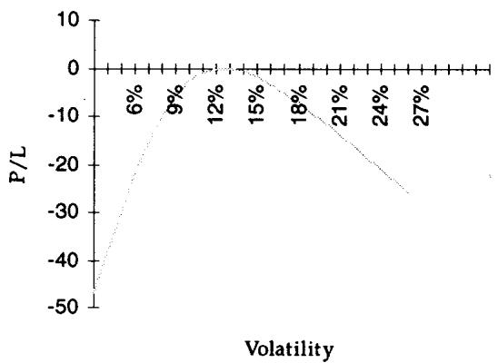
表 18.2 的形状把 vega 凹性的代价摆出来了：在 16% 做到 vega 中性（Total = 0），但波动率往任何一个方向偏离，Total 都转负。这就是做空 volga 的盈亏曲线，一个倒扣的碗。double bet 凹性比 single bet 更剧烈，因为它的价被双障碍封顶在 100%，波动率稍高就顶到天花板，vega 迅速塌缩。用线性 vega 对冲它，等于在碗顶卖出，两边都亏。
七、美式障碍的其他应用
7.1 分期摊还利率证券
分期摊还利率证券的到期、票息、或某些结构里的本金，会根据市场是否达到某个预定义利率而变化。它们可以用任何方式定义，但路径依赖的那些，会在某个利率水平被达到时不可逆地削减票息支付或本金。
因此可以稳妥地假设：摊还 swap 是一个零息工具加上一系列对每笔票息支付的 forward 美式 bet，每个 bet 是市场里的一个特定水平。这个假设不要求市场在某水平下停留较长时间这类特殊特征。它们可以是 forward bet，因为每个 bet 像常规票息支付那样定时。每个结构在定价目的上各不相同，但交易直觉仍是一堆美式 bet 之和。
摊还 swap 是另一个交易员"做多美式数字期权、发现自己长 gamma 直到障碍"的情形。交易员卖期权来抹平 gamma，迅速发现了 vega 凸性和"对冲的一条腿会消失"的概念。由于这些证券短暂流行过一阵，库存的累积在交易商急于买回 gamma 时造成了几次壮观的损失。
这一节是 1.1 节"美式二元是一般框架"的实证。摊还证券被分解成"零息债 + 一串 forward 美式 bet"，于是它继承了美式二元的全部病征：长 gamma 到障碍、vega 凹、对冲腿消失。整个市场的交易商同时长同方向的美式 bet，当他们一起冲去买回 gamma 时，需求踩踏推高了 gamma 价格，制造了第 4 章讲过的流动性反身性损失。
7.2 Option Wizard：对冲过度有害
本章以这个战争故事收尾。一家激进的衍生品公司在一笔交易上亏了一大笔钱：他们用一串带 rebate 的敲出期权"买到了便宜的"波动率，实际上得到了一串美式二元期权。他们在交易里有可观的"margin"，意思是交易员带着一些理论的盯市利润回了家、自我感觉良好。
老板让交易员管理风险、降低敞口，"把钱兑现"（cash-in on the money），指的是他们以为从客户那赚到的钱。于是交易员检视希腊字母、卖出 vega，以一种配得上他这家精明公司的方式完善 vega 中性。
几周后，交易员丢了工作。波动率爆炸，他因为"自己持有的 vega"和"自己大量卖出的 vega"之间的凸性差而亏了一大笔钱。他的老板对四阶矩这类书呆子玩意儿不太接受，以"交易员没能恰当抵消敞口"为由开除了他。实际上，这位交易员用价外期权对冲一个 double 障碍，他甚至做空了六阶矩（sixth moment）。这位交易员，像多数丢工作的衍生品交易员一样，给自己找了个更好的职位（他获得了宝贵经验），并以这句智慧作结：对冲增加了你的风险（Hedging increases your risks）。
必须避免用连续的敞口去对冲不连续的敞口。
这个 war story 是全章四类风险的悲剧合演，理论上它讲的是凸性失配（convexity mismatch）。交易员长一串美式二元（vega 凹、volga < 0），用价外香草（volga > 0、长四阶矩）去做 vega 中性，结果净空了 volga 乃至更高阶矩（double 障碍配价外期权空到六阶矩）。瞬时 vega 中性掩盖了高阶矩的巨大失配，波动率一爆炸，高阶矩项主导盈亏，瞬间巨亏。"对冲增加风险"的精确含义是：用错凸性的工具做一阶中性，会把风险从可见的一阶搬到不可见的高阶，反而放大尾部损失。这把第 16 章"动态对冲让一切路径依赖"和本章"被希腊字母愚弄"推向极致：不连续敞口必须用不连续工具对冲。
7.3 信用风险
假设交易员买了一张美元计价的蒙古政府票据。由于该票据会以与无违约美元利率的利差交易，把这个支付差看成一种对蒙古政府违约的 forward 美式 bet 是方便的。美式 bet 又一次是一般框架：可以估计 bet 的面值是债券全额减去某个回收价值（recovery value）。
这个收尾把美式二元的框架推到了信用衍生品。违约是一个首次触及事件（信用质量首次跌破违约边界），所以违约风险溢价 = 一个 forward 美式 bet 的价格，面值 = 票面 − 回收价值。这正是结构化信用模型（如 Merton 违约模型把违约看成资产价值触及负债边界的首次触及）的雏形，说明本章讲的停时、首次触及、污染原理这套工具远超期权交易，是一切"触发型"或然权益的通用语言。
八、本章综述：理论与实务的对照
| Taleb 的实务命题 | 对应的理论命题 |
|---|---|
| 美式二元在"触及"时支付、路径依赖 | 首次触及停时 ，支付 |
| 美式约为欧式的两倍贵（26% vs 51%） | 反射原理： |
| 污染原理：障碍盈亏符号污染邻域 | Feynman-Kac：边界源项沿空间扩散，决定邻域曲率 |
| 无漂移时 vega/gamma 符号不变 | 纯停时函数，gamma 处处同号，长 vega 口袋 |
| carry 把单调 gamma 扭成 risk reversal | Girsanov 漂移改变触及倾向，障碍附近 gamma 翻号 |
| 美式二元是"对时间的押注" | 价 = 期望退出时间分布 |
| 长 gamma 但在障碍处戛然而止 | 触及即吸收终止，越障后 gamma 归零 |
| gap delta：解平 delta 的滑点 | 支付奇点处 delta 跳变 + 障碍附近流动性洞 |
| 风险随时间向障碍集中 | 时停时空间收缩，gamma 在障碍发散 |
| 静态外推盈亏图会错 | 交易员沿途 rebalance + 触及时被迫反向解平 |
| vega 在障碍处完全消失 | 敞口在 触发后归零，香草 vega 不归零 |
| 美式二元 vega 是凹的 | ，波动率升缩短 但被面值封顶 |
| vega 中性 ⟹ 做空四阶矩 | volga < 0，净空 vvol，无补偿且爆炸时致命 |
| 四类风险存在于所有障碍期权 | 久期/gap/障碍后 vega/vega 凹 ↔ 停时漂移、支付奇点、归零失配、负 volga |
| 只能用时间期权对冲时间期权 | 同为停时型工具，触发点相近的另一障碍 |
| 被希腊字母导航很危险 | 久期是随机停时，瞬时 vega 给虚假安全感 |
| if settled 制造负 gamma 洞 | 障碍非吸收、日内可折返，停时带日历结算约束 |
| 美式 double bet 不是两个 bet 之和 | 联合分布不可分离，先触即终止耦合 |
| 80% 价 ⟹ 约 20% 名义存活时间 | 停时期望的粗略读数，窄双障碍几乎必触及 |
| double bet 凹性比 single 更剧烈 | 价被双障碍封顶 100%，波动率稍高即顶天花板 |
| 摊还 swap = 零息债 + 一串 forward 美式 bet | 路径依赖票息 = 触及型或然支付的线性组合 |
| 对冲过度有害、卖 vega 致命 | 凸性失配：用正 volga 工具空 volga，搬风险到高阶 |
| 信用风险 = 对违约的 forward 美式 bet | 违约 = 首次触及，溢价 = bet 价，面值 = 票面−回收 |
核心观点
第一，美式二元是一个对时间的押注。它的价值是首次触及停时 的概率，而非终点位置的概率。这一个改动（触及 vs 结算）让久期从固定的 变成随机、不稳定的 ，全章的难点都从这里长出来。无漂移时它约是欧式的两倍贵，根在反射原理。
第二，污染原理决定 gamma/vega 符号。障碍点的盈亏符号像热源一样扩散到邻域，决定那里的曲率。无漂移时美式二元是一个单调的长 vega 口袋；carry 一进来，漂移改变触及倾向，profile 退化成 risk reversal。
第三，vega 凹性是核心病征，做空四阶矩是致命陷阱。美式二元长 vega 但 volga 为负，因为波动率上升缩短 但价格被面值封顶。一旦用线性 vega 工具做 vega 中性，就净空了 vvol，而做空四阶矩没有补偿、在波动率爆炸时致命。本章末的 war story 就是这么亏掉职位的。
第四，四类风险定义了所有障碍期权：久期风险、gap 风险、障碍后 vega 消失、vega 凹性。它们以某种形态存在于一切障碍结构里，是第 19、20 章的预备。
第五，对冲哲学：用时间期权对冲时间期权，看 strike 而非看希腊字母。不连续敞口必须用不连续工具对冲，用连续的香草去对冲会引入凸性失配、把风险搬到高阶矩。被电脑表格上不稳定的希腊字母导航很危险，把障碍 book 与香草 book 分开、做非参数交易员，活得更好。
面对一个美式二元/障碍结构的操作清单
- 这是"若触及"还是"若结算"？if settled 会在障碍附近制造负 gamma 洞，gap delta 解平时机彻底不确定。
- 有 carry 吗？无漂移是单调长 vega 口袋；负 carry 处处长 gamma；正 carry 超过 theta 会变 risk reversal。
- 我是在押时间还是押资产？它的期望退出时间多短？价格的折价（如 80%）告诉我还剩多少存活时间。
- 我的 vega 是凹的吗？做 vega 中性会不会让我净空四阶矩（vvol）？有补偿吗？
- 对冲工具的 volga 是正的吗？用价外期权（正 volga）对冲凹 vega 会不会反而做空更高阶矩？
- 障碍后我的对冲腿会消失吗？越过障碍后香草 vega 还在、敞口已归零，标度失配怎么办？
- gap delta 解平的滑点有多大？障碍附近有流动性洞吗？假触发的风险呢？
- 这是 double bet 吗？记住它不是两个 bet 之和，凹性更剧烈，线性 vega 对冲在碗顶两边都亏。
- 我该看希腊字母还是看 strike？这本障碍 book 和香草 book 分开了吗？
一句话收束
本章最该记住的一句：美式二元是一个对时间的押注，它的久期是随机停时、它的 vega 是凹的，所以用连续工具去对冲它必然引入凸性失配，正确的活法是用时间期权对冲时间期权、看 strike 而非看那些会骗人的希腊字母。 污染原理告诉你 gamma 的符号住在障碍上，vega 凹性告诉你做 vega 中性就是做空四阶矩，而那句"对冲增加风险"提醒你：面对不连续的敞口，过度的连续对冲比不对冲更危险。